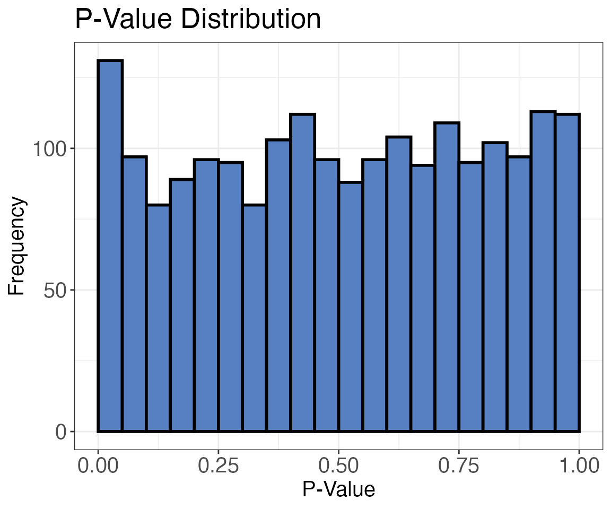
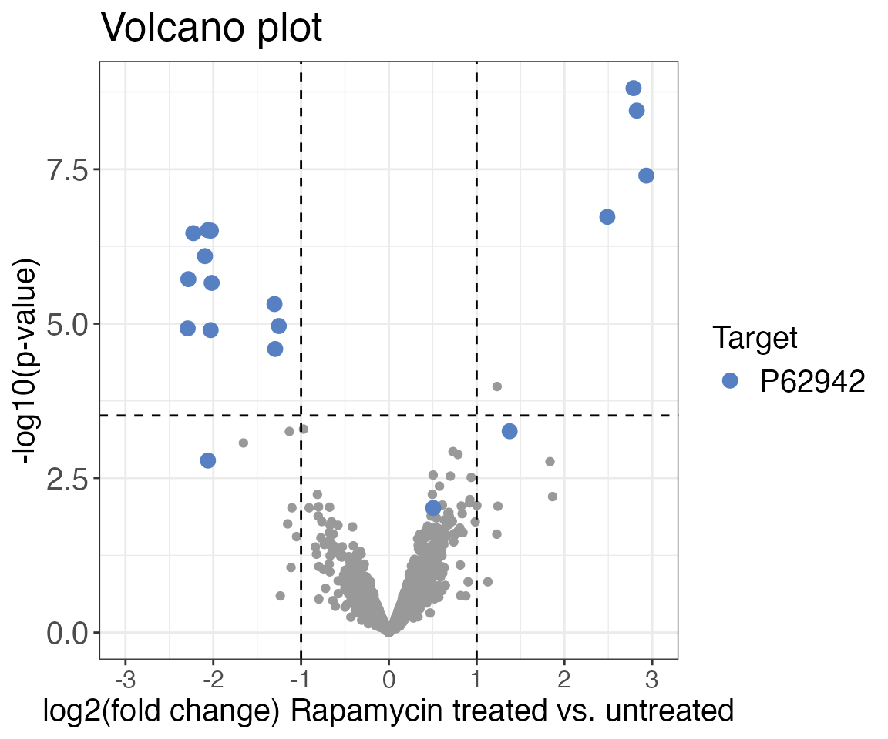
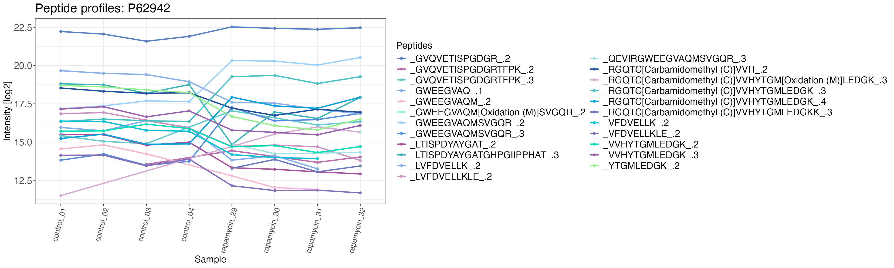

Single Dose Treatment Data Analysis Workflow
Dina Schuster
2021-03-21
Source:vignettes/data_analysis_single_dose_treatment_workflow.Rmd
data_analysis_single_dose_treatment_workflow.RmdIntroduction
This vignette will give you an overview of how you can analyse single dose treatment LiP-MS or bottom-up proteomics data using protti. If you would like to analyse dose-response data with samples of multiple treatment concentrations you might want to look at the dose-response data analysis vignette. Before analysing your data please make sure that it is of sufficient quality and that you do not have any outliers in your data. To do this you can take a look at the quality control vignette.
protti
protti includes several functions that make it easy for the user to analyse and interpret data from LiP-MS or bottom-up proteomics experiments. The R package includes functions for
- Quality control (see quality control vignette for more detailed information)
- Data preparation
- Median normalisation
- Data filtering
- Protein abundance calculation from precursor or peptide intensities
- Imputation of missing values
- Fetching of database information (ChEBI, GO, KEGG, MobiDB, UniProt)
- Calculation of sequence coverage
- Data analysis
- Statistical hypothesis tests
- Fitting of dose-response curves (relevant for experiments with several treatment concentrations, click here for more information)
- Data visualisation
- Volcano plots
- Barcode plots (plots that show protein coverage and significant changes projected onto the protein sequence)
- Wood’s plots
- Profile plots
- Data interpretation
- Treatment enrichment (check if your hits are enriched with known targets)
- GO-term enrichment
- Network analysis (based on STRING database information)
- KEGG pathway enrichment
You can read more about specific functions and how to use them by calling e.g. ?median_normalisation (for the median_normalisation() function). Calling ? followed by the function name will display the function documentation and give you more detailed information about the function. This can be done for any of the functions included in the package.
This document will give you an overview of data preparation, data analysis, data visualisation and data interpretation functions included in protti. It will show you how they can be applied to your data. The examples in this file are run on a published LiP-MS dataset. In the experiment a HeLa cell lysate was treated with different amounts of the drug Rapamycin and it could be shown that the target of Rapamycin (FKBP12) could be successfully identified. For this vignette we are using a filtered version of the original data set which includes only the 10 μM treatment concentration and the control (untreated). For simplicity only 50 proteins are included in the dataset.
The data set is produced from the output of Spectronaut™. However, if you have any other data such as DDA data that was searched with a different search engine you can still apply protti’s functions. Just make sure that your data frame contains tidy data. That means data should be contained in a long format (e.g. all sample names in one column) rather than a wide format (e.g. each sample name in its own column). You can easily achieve this by using the pivot_longer() function from the tidyr package. If you are unsure about how your input data is supposed to look like, please use the create_synthetic_data() function and compare this to your data. You can also take a look at the input preparation vignette, there you will find all the necessary information on how to get your data into the correct format.
The input data should have a similar structure to this example:
| Sample | Replicate | Peptide | Condition | log2(intensity) |
|---|---|---|---|---|
| sample1 | 1 | PEPTIDER | treated | 14 |
| sample1 | 1 | PEPTI | treated | 16 |
| sample1 | 1 | PEPTIDE | treated | 17 |
| sample2 | 1 | PEPTIDER | untreated | 15 |
| sample2 | 1 | PEPTI | untreated | 18 |
| sample2 | 1 | PEPTIDE | untreated | 12 |
How to use protti to analyse your data
Getting started
Before we can start analysing our data, we need to load the protti package. This is done by using the base R function library(). In addition, we are also loading the packages magrittr and dplyr. Both magrittr and dplyr are part of the tidyverse, a collection of packages that provide useful functionalities for data processing and visualisation. If you use many tidyverse packages in your workflow you can easily load all at once by calling library(tidyverse).
After having loaded the required packages we will load our data set into the R environment. In order to do this for your data set you can use the function read_protti(). This function is a wrapper around the fast fread() function from the data.table package and the clean_names() function from the janitor package. This will allow you to not only load your data into R very fast, but also to clean up the column names into lower snake case to make them more R-friendly. This will make it easier to remember them and to use them in your data analysis.
# To read in your own data you can use read_protti()
your_data <- read_protti(filename = "mydata/data.csv")For this example we are going to use the rapamycin_10uM test data set included in protti. To read in the file we are simply going to use the utils function data().
data("rapamycin_10uM")Data preparation
Log2 transformation, median normalisation and CV filtering
After inspecting the data and performing quality control (see quality control vignette for more information) we will now start to prepare the data for the analysis.
First, we remove decoy hits (used for false discovery rate estimation). Our example data set contains a column called eg_is_decoy that consists of logicals indicating whether or not the peptide is a decoy hit. To remove decoys we will use the dplyr function filter().
Next, we log2 transform our intensities, then we are median normalising the data. To transform the intensities we are using the dplyr function mutate() which creates a new column while maintaining the original column.
Note that we are also using the pipe operator %>% included in the R package magrittr. %>% takes the output of the preceding function and supplies it as the first argument of the following function. Using %>% makes code easier to read and follow.
For median normalisation we are using the protti function median_normalisation(). The function normalises intensities for each run to the median of all runs. This is only necessary if your search algorithm does not already median normalise your intensities. For the example data we have disabled median normalisation in Spectronaut, therefore we need to median normalise now. The formula for median normalisation is:
\[median ~ normalised ~ intensity = intensity - median ( run ~ intensity ) + median ( global ~ intensity) \]
To ensure that only good peptide measurements will be used for further analysis, we will also filter our data based on coefficients of variation (CV). In order to do this we are using the function filter_cv(). For this example we are retaining peptides with a CV < 25 % in at least one of the two conditions.
The CVs are calculated within the function according to the formula:
\[CV = \frac{standard ~ deviation}{mean} * 100\]
Note: The use of the filter_cv() function is optional. You should be careful with using it since it might remove a lot of your data if your experiment was rather noisy. However, especially in these cases it might be useful to apply the function in order to remove peptides with a poor quality beforehand to improve the overall result.
data_normalised <- rapamycin_10uM %>%
filter(eg_is_decoy == FALSE) %>%
mutate(intensity_log2 = log2(fg_quantity)) %>%
median_normalisation(sample = r_file_name,
intensity_log2 = intensity_log2)
data_filtered <- data_normalised %>%
filter_cv(grouping = eg_precursor_id,
condition = r_condition,
log2_intensity = intensity_log2,
cv_limit = 0.25,
min_conditions = 1)Remove non-proteotypic peptides
For LiP-MS analysis we commonly remove non-proteotypic peptides (i.e. peptides that could come from more than one protein). If you detect a change in non-proteotypic peptides it is not possible to clearly assign which protein it comes from and therefore which protein is affected by your treatment. If you are using the output from Spectronaut you will find a column called “pep_is_proteotypic”. This column contains logicals indicating whether your peptide is proteotypic or not.
To filter out non proteotypic peptides we are using the dplyr function filter().
data_filtered_proteotypic <- data_filtered %>%
filter(pep_is_proteotypic == TRUE)Fetching database information and assigning peptide types
In order to obtain more information about our identified proteins we are going to use the function fetch_uniprot() to download some of the available information from UniProt directly.
fetch_uniprot() uses a vector of UniProt IDs as its input. We are producing this vector by using the base R function unique() which will extract all unique elements in the selected protein ID column. In this case we want to download the full protein name, gene IDs, GO terms associated with molecular function, StringDB IDs, information on known interacting proteins, location of the active site, location of binding sites, PDB entries, protein length and protein sequence. There are more options for columns to add (for more information on possible columns to add click here).
fetch_uniprot() returns a new data frame. In order to be able to merge this with our original data frame we have to rename the ID column to match the name of the protein ID column of our original data frame. To do this we are using dplyr’s rename() function.
To merge the two data frames we are using the dplyr function left_join(). We are matching the two data frames by the column “pg_protein_accessions”. By using left_join() we are retaining all rows from our original data frame while adding the columns from the data fame generated with fetch_uniprot().
Note: you can also directly join the UniProt data frame with your data without the need to rename its id column. You can specify in the by argument in left_join() that two columns are differently named.
Next, we would like to assign the trypticity of our peptides (i.e. if the peptides are fully-tryptic, semi-tryptic or non-tryptic). In order to do this we will first need to define the peptide positions in the protein and find the preceding and following amino acids. To obtain this information we are using the protti function find_peptide(). The output of this function can then be used in the function peptide_type() which will add an additional column with the peptide trypticity information. By using the function sequence_coverage() we are adding an additional column to the data frame containing information on how much of the protein sequence we identified in our experiment.
uniprot_ids <- unique(data_filtered_proteotypic$pg_protein_accessions)
uniprot <-
fetch_uniprot(
uniprot_ids = uniprot_ids,
columns = c(
"protein names",
"genes",
"go(molecular function)",
"database(String)",
"interactor",
"feature(ACTIVE SITE)",
"feature(BINDING SITE)",
"database(PDB)",
"length",
"sequence"
)
) %>%
rename(pg_protein_accessions = id)
data_filtered_uniprot <- data_filtered_proteotypic %>%
left_join(y = uniprot,
by = "pg_protein_accessions") %>%
find_peptide(protein_sequence = sequence,
peptide_sequence = pep_stripped_sequence) %>%
peptide_type(aa_before = aa_before,
last_aa = last_aa,
aa_after = aa_after) %>%
sequence_coverage(protein_sequence = sequence,
peptides = pep_stripped_sequence)With the qc_sequence_coverage() function, you can use the sequence coverage information to check how coverage is distributed over all proteins in the sample. Usually, the center of the distribution is low due to many proteins with poor coverage. For this subseted data set with only 40 proteins the sequence coverage is distributed relatively evenly.
qc_sequence_coverage(
data = data_filtered_uniprot,
protein_identifier = pg_protein_accessions,
coverage = coverage
)Data analysis
Statistical hypothesis test
To test if there is a difference between the peptide abundances in our two conditions (i.e. Rapamycin treated and untreated) we are going to use a Welch’s t-test (unpaired). Welch’s t-test is a method for comparing means of two independent sample groups and it does not assume equal variances between groups (as Student’s t-test would).
Before the statistical hypothesis test we have to define the types of missing values present in our data set. We are going to use the function assign_missingness() which will return a column with information on the types of missingness we have in our data (i.e. complete, missing at random (MAR) or missing not at random (MNAR)). We are using the default parameters of this function which assumes that missing values are MAR when the conditions are at least 70 % complete (adjusted downward). Missing values are assumed to be MNAR when less than 25 % of values are present (adjusted_downward) in one condition if the other condition is complete.
After assigning the types of data missingness we are using the function diff_abundance(). In this case by selecting method = t-test the function will perform a Welch’s t-test. There are also options included to perform a moderated t-test based on the R package limma or to detect differential abundances based on the algorithm implemented in the R package proDA. The algorithm used for proDA is based on a probabilistic dropout model which facilitates hypothesis testing without imputation.
Please note that in this example we are not imputing missing values. You can, however, do so by using the function impute(). This function uses the output of assign_missingness() as its input. You can use two different imputation methods:
-
method = ludovicwill sample values that are MNAR from a normal distribution around a value that is 3 (log2) lower than the mean intensity of the non-missing condition. The method is named after and created by our colleague Ludovic Gillet. -
method = noisewill sample MNAR values from a normal distribution around the mean noise of the complete condition. This requires you to have an additional column with information on the noise that can be obtained from Spectronaut.
Both methods impute MAR data using the mean and variance of the condition with the missing data.
Since we are dealing with a LiP-MS data set we are performing the statistical analysis on the precursor level. For protein abundance data you can simply use protein abundances as your intensities and select your protein groups column for the grouping argument. Make sure to retain any columns you need for further data analysis with the retain_columns argument of both functions.
diff_abundance_data <- data_filtered_uniprot %>%
assign_missingness(
sample = r_file_name,
condition = r_condition,
grouping = eg_precursor_id,
intensity = normalised_intensity_log2,
ref_condition = "control",
completeness_MAR = 0.7,
completeness_MNAR = 0.25,
retain_columns = c(pg_protein_accessions, go_molecular_function, database_string, start, end, length, coverage)
) %>%
diff_abundance(
sample = r_file_name,
condition = r_condition,
grouping = eg_precursor_id,
intensity_log2 = normalised_intensity_log2,
missingness = missingness,
comparison = comparison,
ref_condition = "control",
method = "t-test",
retain_columns = c(pg_protein_accessions, go_molecular_function, database_string, start, end, length, coverage)
) p-value distribution
The p-value calculated with the t-test is automatically adjusted for multiple testing using the Benjamini-Hochberg (FDR) correction. This assures that we keep the false discovery rate low. An assumption of this correction is however, that p-values should have an overall even distribution with a concentration of values in the significant range. You can check this by using the protti function plot_pval_distribution().
plot_pval_distribution(data = diff_abundance_data,
grouping = eg_precursor_id,
pval = pval
)
For this subset of data the distribution of p-values is relatively equal and there is no increase in values in the low p-value range but rather a decrease. This means that the Benjamini-Hochberg algorithm might not be suitable for correcting these p-values. You can pick another algorithm for the correction and supply it to the p_adj_method argument and run diff_abundance() again. The available methods are any methods that can be supplied to the standard R function p.adjust() that is used internally. You can also just use this function or any other correction algorithm on your data and overwrite the values in the adj_pval column.
Note: If the p-values are not fulfilling the assumption of the multiple-testing correction, meaning very little observations are changing significantly, it can happen that only a few significant hits remain after adjusting the p-value. This can be a common occurrence so you should always have a look at the p-value distribution. This will help you decide on whether or not you should use adjusted p-values, not adjusted p-values or if you should adjust them with a specific method.
Volcano plot
Next we are going to visualise the output of the previously performed hypothesis test to assess the results of our experiment. For this we are going to plot a volcano plot with fold-changes on the x-axis and the adjusted p-value (q-value) or p-value on the y-axis. The output of the previously used diff_abundance() function is ideal to use for the volcano_protti() function as it contains all the information we need: precursor IDs, protein IDs, fold changes (diff) and adjusted p-values (adj_pval). We are going to highlight the peptides of the known target of Rapamycin FKBP12 (UniProt ID = P62942) in blue to quickly find the peptides in the plot. You can also make the plot interactive by setting interactive = TRUE. This will help you quickly obtain more information on each point in the plot. We are going to plot the volcano plot with and without adjusted p-values.
volcano_protti(
data = diff_abundance_data,
grouping = eg_precursor_id,
log2FC = diff,
significance = pval,
method = "target",
target_column = pg_protein_accessions,
target = "P62942",
x_axis_label = "log2(fold change) Rapamycin treated vs. untreated",
y_axis_label = "-log10(p-value)",
title = "Volcano plot (p-value not adjusted)",
significance_cutoff = 0.05
)
volcano_protti(
data = diff_abundance_data,
grouping = eg_precursor_id,
log2FC = diff,
significance = adj_pval,
method = "target",
target_column = pg_protein_accessions,
target = "P62942",
x_axis_label = "log2(fold change) Rapamycin treated vs. untreated",
y_axis_label = "-log10(q-value)",
title = "Volcano plot",
significance_cutoff = 0.05
)
Barcode plot
For LiP-MS experiments a good way to see where on the protein the changes due to binding or conformational changes occur is to plot a barcode plot. A barcode plot can be created with the protti function barcode_plot(). The detected peptides are coloured in grey and the changing peptides are highlighted in blue.
In order to produce a barcode plot only for our target FKBP12 we are creating a data frame that contains only information for our target protein. We are doing this by using dplyr’s filter() function. The filtered data frame is then used as the input for the plot.
FKBP12 <- diff_abundance_data %>%
filter(pg_protein_accessions == "P62942")
barcode_plot(
data = FKBP12,
start_position = start,
end_position = end,
protein_length = length,
coverage = coverage,
colouring = diff,
cutoffs = c(diff = 1, adj_pval = 0.05),
protein_id = pg_protein_accessions
)Wood’s plot
An additional way to plot LiP-MS changes are Wood’s plots. These plots will show the extent of the change along the protein sequence. To produce a Wood’s plot we are using the function woods_plot() and colour the peptides according to their adjusted p-values.
woods_plot(
data = FKBP12,
fold_change = diff,
start_position = start,
end_position = end,
protein_length = length,
coverage = coverage,
colouring = adj_pval,
protein_id = pg_protein_accessions,
fold_change_cutoff = 1,
)Peptide profile plots
To see how the individual precursors in our target protein are changing with the treatment we are plotting profile plots by using the function plot_peptide_profiles(). This is particularly useful as you can quickly see if your whole protein changes in abundance or only a fraction of precursors/peptides. If you have protein abundance data you can also use the plot to show changes in protein abundance over your treatment condition(s). By selecting multiple targets (as a vector) you can produce the plot for multiple proteins.
FKBP12_intensity <- data_filtered_uniprot %>%
filter(pg_protein_accessions == "P62942")
plot_peptide_profiles(
data = FKBP12_intensity,
sample = r_file_name,
peptide = eg_precursor_id,
intensity_log2 = normalised_intensity_log2,
grouping = pg_protein_accessions,
targets = "P62942",
protein_abundance_plot = FALSE
)
#> $P62942
Additional helpful functions
protti includes additional helpful functions that do not make sense to use for this data set but are great to use for data sets of full size that have global changes. These functions include the go_enrichment()function that helps you check if your hits are enriched for specific gene ontology (GO) terms, the network_analysis() function that plots a String network based on information from StringDB for your hits and the kegg_enrichment() function which checks for enriched pathways in your hits. Furthermore, you can directly check for enrichment of a self defined treatment with the treatment_enrichment() function.
Here we will quickly show you how you could use these functions in a full size data set with more global changes:
For GO enrichment you would add an additional column to your data frame containing information on whether your hit is significant or not. You can do this by using the dplyr function mutate() which will add an additional column to your data frame. Here we want the column to contain logicals that are either TRUE when the adjusted p-value is below 0.05 and the log2(fold change) is below -1 or above 1 or to be FALSE if this is not the case. We are using the ifelse() function to produce the logicals. Furthermore, we annotate if the hit is true positive by marking peptides of the known Rapamycin binding protein FKBP12.
For the network analysis we are filtering the previously produced data frame containing the is_significant column for significant hits. This data frame can then be used as an input for network_analysis() to check if the proteins can be found in an interaction network based on StringDB information.
For kegg_enrichment() you need to first use the function fetch_kegg() to obtain the KEGG pathway identifiers for your data set. You can then use dplyr’s right_join()to join the output with the previously produced data frame containing a column indicating whether your hits are significant or not.
If you know all known interactors of your specific treatment you can check for an enrichment of these with the treatment_enrichment() function. This is particularly useful if your treatment has an effect on many proteins.
diff_abundance_significant <- diff_abundance_data %>%
mutate(is_significant = ifelse((adj_pval < 0.01 & abs(diff) > 1), TRUE, FALSE)) %>% # mark significant peptides
mutate(binds_treatment = pg_protein_accessions == "P62942") # mark true positive hits
### GO enrichment using "molecular function" annotation from UniProt
go_enrichment(
data = diff_abundance_significant,
protein_id = pg_protein_accessions,
is_significant = is_significant,
go_annotations_uniprot = go_molecular_function
)
### Network analysis
network_input <- diff_abundance_significant %>%
filter(is_significant == TRUE)
network_analysis(data = network_input,
protein_id = pg_protein_accessions,
string_id = database_string,
binds_treatment = binds_treatment,
organism_id = 9606)
### KEGG pathway enrichment
# First you need to load KEGG pathway annotations from the KEGG database for your specific organism of interest.
# In this case HeLa cells were used, therefore the organism of interest is homo sapiens (hsa)
kegg <- fetch_kegg(species = "hsa")
# Next we need to annotate our data with KEGG pathway IDs and perform enrichment analysis
diff_abundance_significant %>%
left_join(kegg, by = c("pg_protein_accessions" = "uniprot_id")) %>% # columns containing proteins IDs are named differently
kegg_enrichment(protein_id = pg_protein_accessions,
is_significant = is_significant,
pathway_id = pathway_id,
pathway_name = pathway_name)
### Treatment enrichment analysis
treatment_enrichment(diff_abundance_significant,
protein_id = pg_protein_accessions,
is_significant = is_significant,
binds_treatment = binds_treatment,
treatment_name = "Rapamycin")